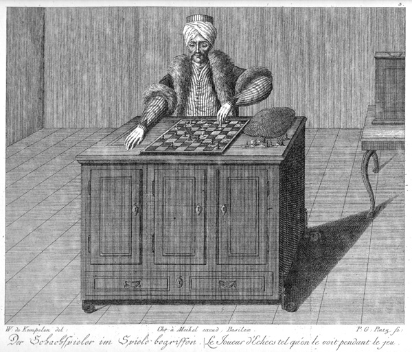

The mysterious fortune telling machine knows. But underneath its mannequin exterior, there is a bug preventing it from working. The fortune teller seems to have the same questions you do.
Debug the Fortune Telling Website
To do this locally, you'll need to download three files:
To debug, rather than opening them directly from your filesystem, run
python -m SimpleHTTPServer from the directory you've downloded
them into. You can then load the file in your browser at
http://localhost/who-am-i.html.